About
About Projects
Projects Games
Games Stories
Stories Store
Store Hobby
Hobby Notes
Notes How-to
How-toSculptures, paintings... basically stuff I couldn't scan directly that I did on my own, or that were part of my work load at the end of high school and my art college from the late 90's to 2005.
Optical illusion mandala
Done during my 5th year of high school in my art class. This is suppose to create an optical illusion, meant to confuse you and to torture your eyes.
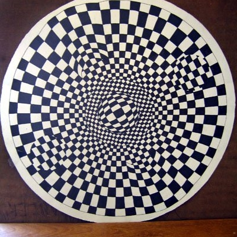 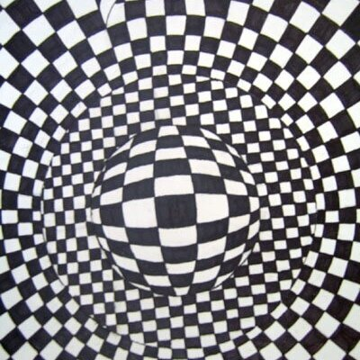Falling cat
Done in my second year in college, 1st semester. This wooden sculpture reaches the 8ft mark and presents the way in which a cat falls. The fall is broken down in 6 main steps, from the point the cat is completely upside down to when it is landing. I had decided to make this mainly because of the complexity involved in it... cats have exceptional coordination and balance and a flexible musculoskeletal system. They are normally able to orient their bodies in space in such a way as to land on all four limbs, something that is quite exceptional and worth analyzing.
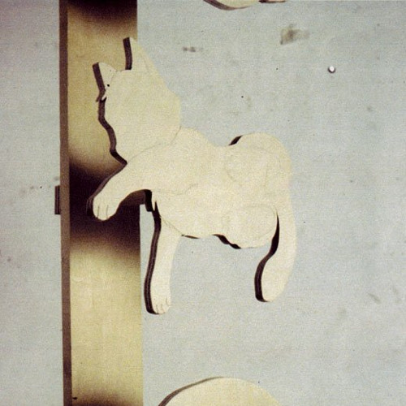I got into trouble with my art teacher for this project, because I had used a photo reference of a cat falling to model the cut-outs, and she considered that plagiarism. I suppose I could have waited for a cat to fall off of something to use as reference (YouTube wasn't a thing back then, holy crap I'm old).
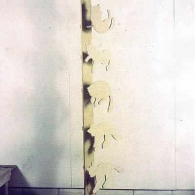(click on photos to view entire images)
Wooden box
I did this in my 4th year of high school. I just took an Ebenisterie class and we made this nice, pretty box out of wood.
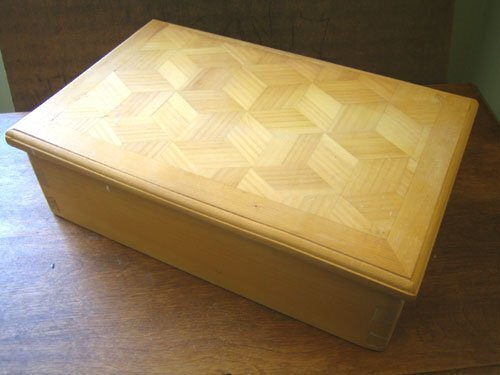 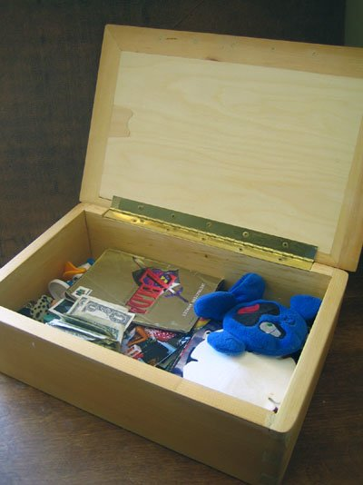 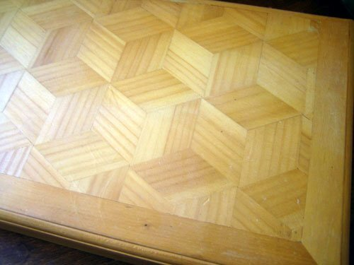 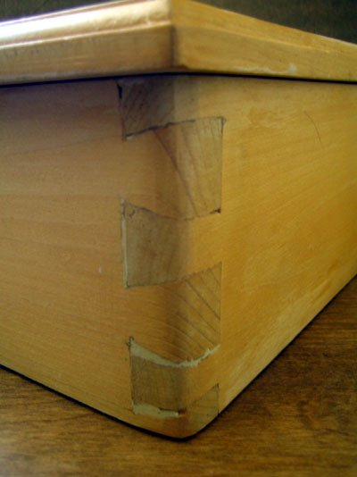Don't look too closely at the joinery...
Kali Barbie
I made this on my first semester of college. This sculpture shows a 6-armed and 3-legged barbie doll mounted on top of a chaotic base made from differently melted colored candle wax. Mixed into it are other things such as barbie limbs and broken glass. Meaning I had written at the time: "The barbie doll herself was emblematic of beauty, but in this piece became "Kali", the Hindu Goddess of Time, Change, Creation, Destruction and Power. It's about the destruction of beauty standards in modern society, and highlights the pains that these so-called standards cause women." Also, maybe fuck gender-specific toys?
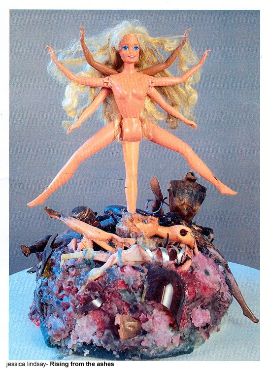 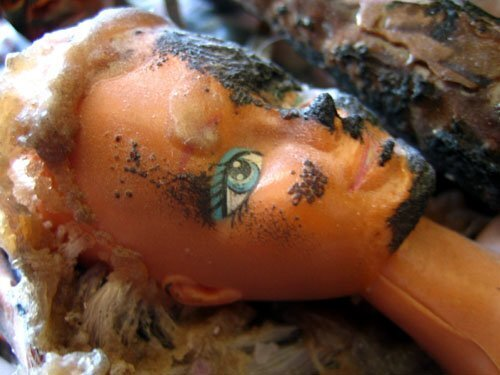There is a charred ken doll head in there, because Barbie don't need no man. This was my sister's doll, and to this day she does not know that I did this to him.
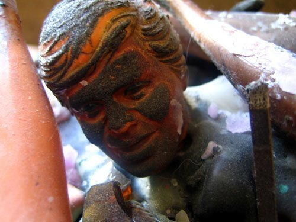There's also a small child. Perhaps symbolizing the pressure put on women to bear children, at least that is how I interpret this today. Full disclosure, this project might just have happened because I wanted an excuse to burn some dolls.
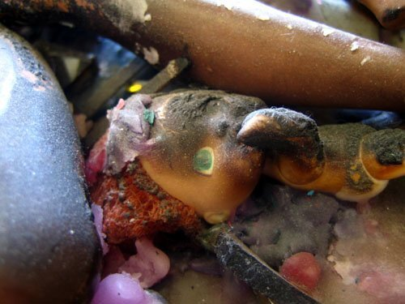Wooden mirror
This was done during my last year of high school. I was really proud of this project, it took all year long to finish (I only had an hour a week to work on it). The mirror itself can be taken off the stand, it can also make a full spin so you can easily move it around.
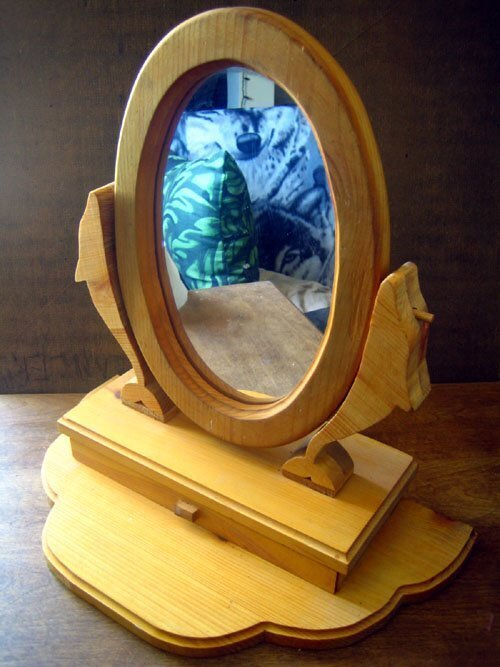That's right, I had a wolf blanket.
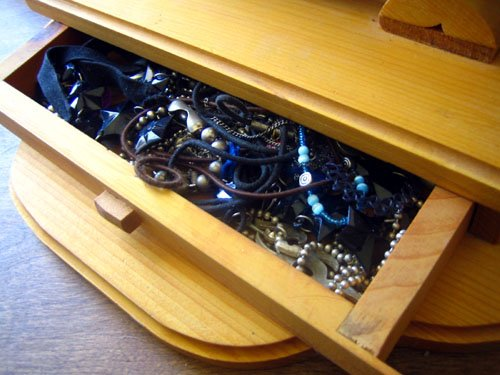Wooden pencil holder
Done in my 3rd year of high school in shop class, everyone had to make a pencil holder. Though I use mine to store my paint brushes as well, even though, I do not paint much.
 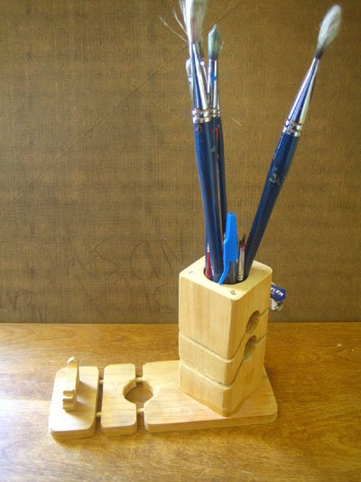
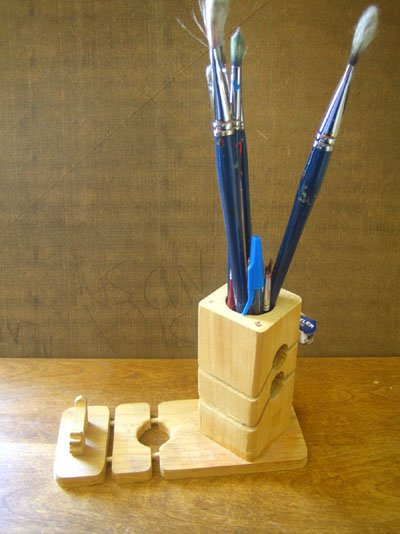
Because I added the little wooden dog I got extra points. The funniest thing about this is that I did not make that dog, I found it in a discard bin and appended it to my project.
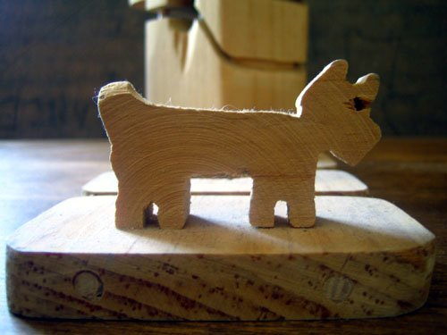Puzzle portrait
This was my final project for my second year of college. It was a self-portrait done in acrylics over a wooden board. The board itself was cut up into 'puzzle pieces'. This painting was 6 ft tall. I projected a photo onto the board to draw the outline of the face, to get the sizes right. Meaning of the project, as written by my past self: "The painting is cut up into puzzle pieces, representing how I am only beginning to find myself, pulling all of the pieces together. Each pieced represents experiences I've had that contributed to making me into who I am." (I was a teen, and only beginning to find like-minded people). This piece was exposed hung up on a wall. The puzzle pieces are removable, I had built brackets out of wood at the back of each.
My parents still have this absurdly large painting. It's up in my old room in the family house. They refuse to get rid of it, even if I've asked them to. I think it is because it has my likeness...